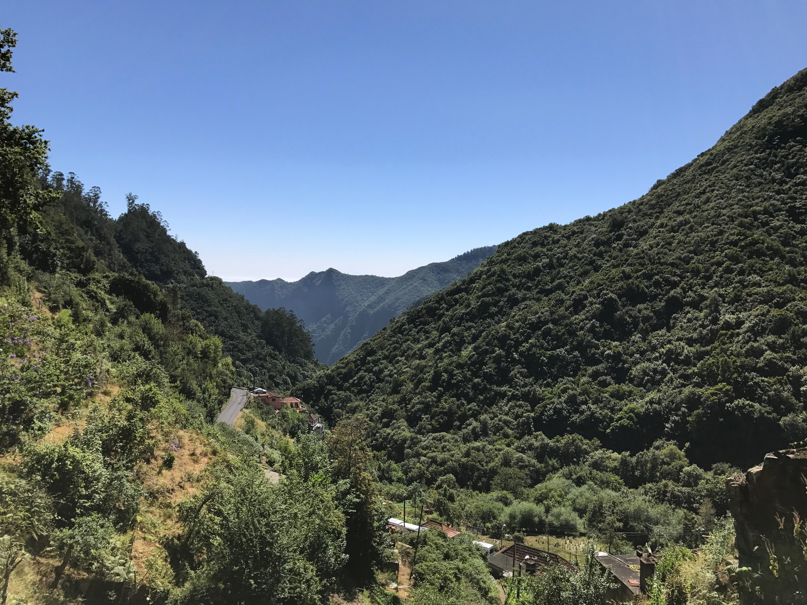
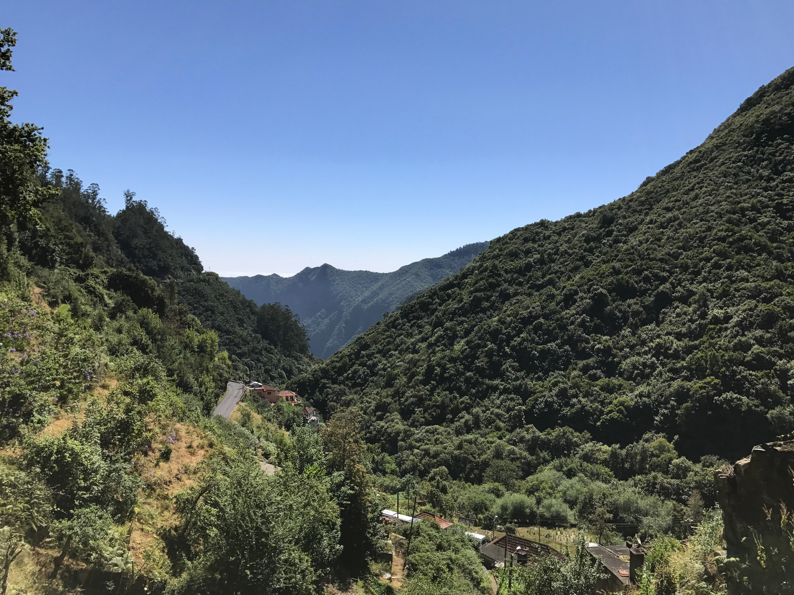
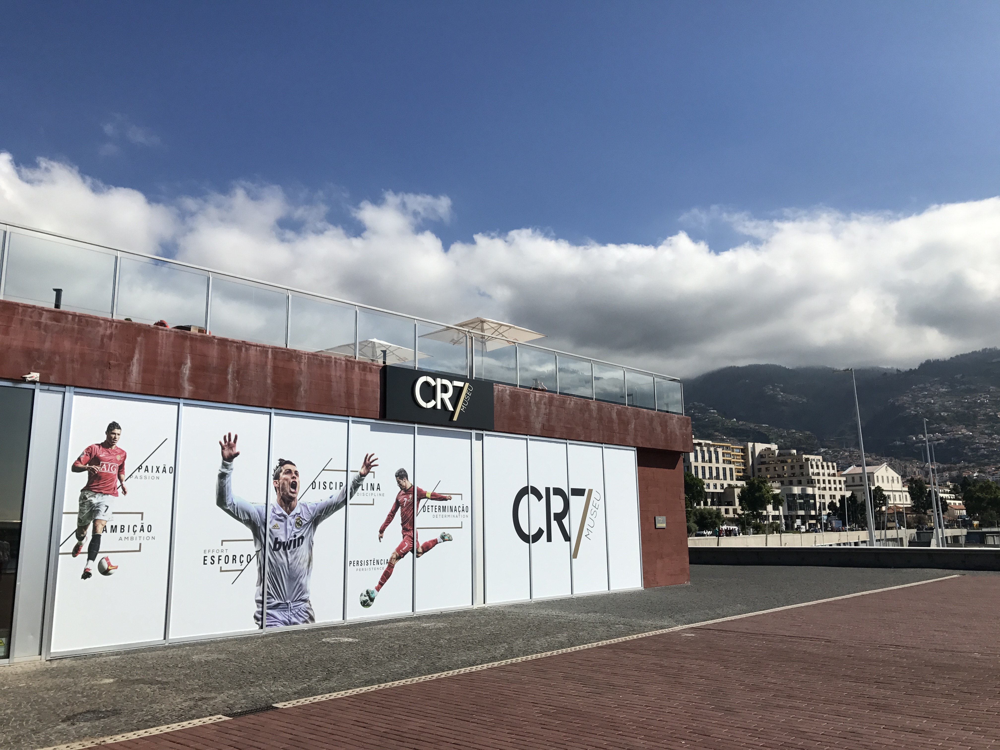
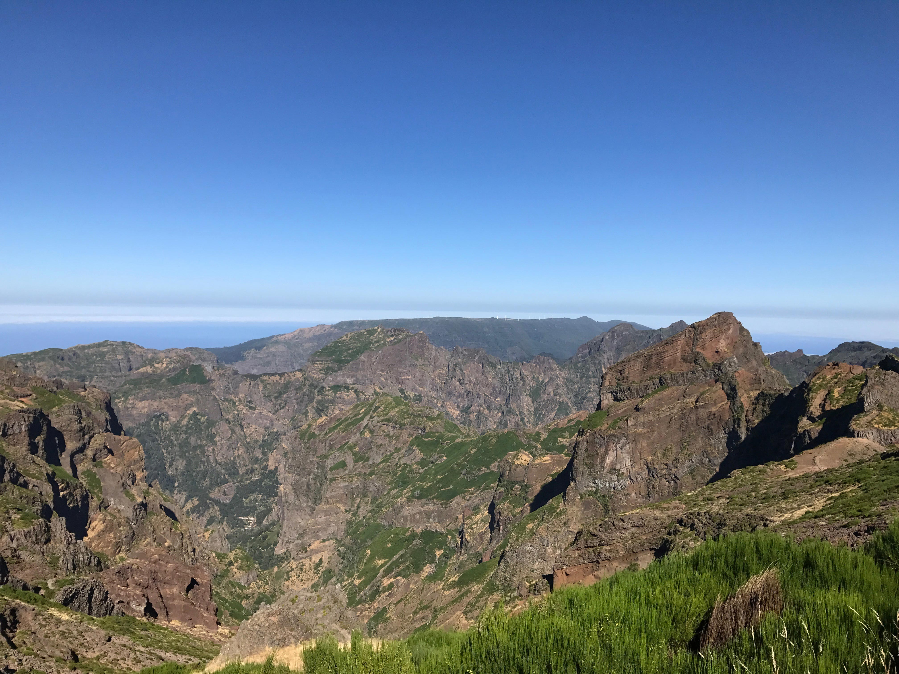

Madeira – et besøg værd
Fredag - 13. april ~ by Morten Jeppesen
Her en oversigt over de ting, du skal opleve på øen.
Fredag - 13. april ~ by Morten Jeppesen
Her en oversigt over de ting, du skal opleve på øen.
Onsdag - 11. april ~ by Morten Jeppesen
Kongen af Madeira (og Portugal) har stor betydning for øen.
Tirsdag - 3. april ~ by Morten Jeppesen
Læs om de bjergtagende og unikke levadavandringer på øen